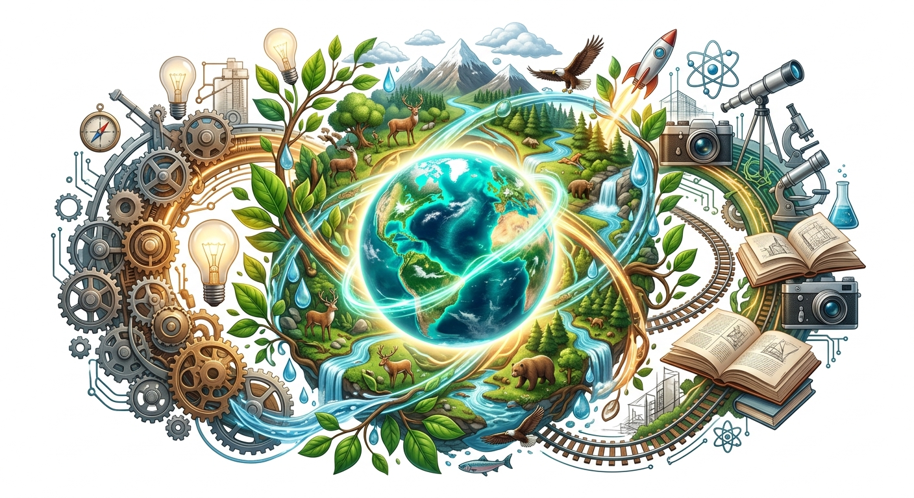
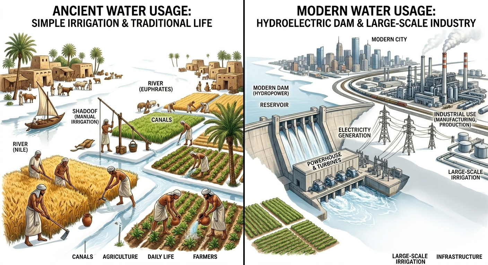
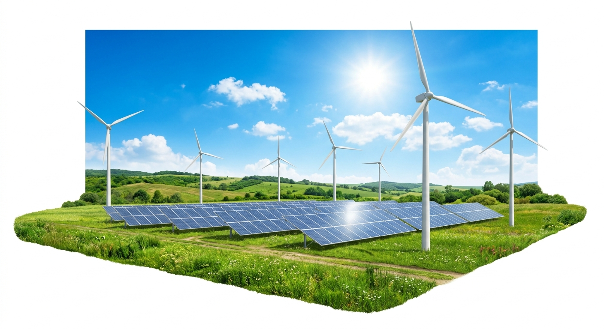
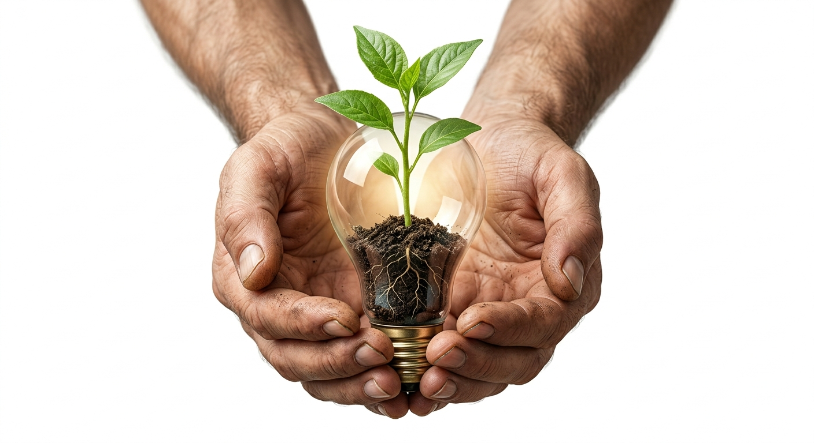

Nature has bestowed our Mother Earth with a large variety of rocks, soils, minerals, vegetation, and animals. We use these gifts of nature to fulfill our day-to-day needs, such as air to breathe, water to drink, and food to eat.
Resource: All the things on earth which are necessary for our existence on this planet are known as resources.
Human Resource: Even human beings are considered a resource because they are an asset. It is only with the help of human skill that other resources can be developed and utilized efficiently.

Human needs and wants are neither uniform in all parts of the world nor static over the years. They generally grow and become complex with the process of change in society.
Even today, primitive tribes like the Pygmies of Africa eat edible plants, roots, flowers, fruits, and hunt animals to survive, relying purely on direct natural resources.
The utility and value of a resource vary from time to time and place to place.

Resources become usable when they are processed. For example, raw cotton is converted into yarn, which is further processed into fabric, and finally into garments. At various stages, value addition is possible by applying human skill and technology.
The utilisation of resources depends on several vital factors:
Mere presence of resources does not guarantee development! In the initial stages of economic development, resource availability played the main role. Today, capital and technology are equally crucial. For example, the USA is developed because it is technologically advanced and self-sufficient, while many African nations are less developed despite being rich in resources, due to a lack of skilled labor and technology.
Resources are classified into various categories based on different criteria:

Biotic Resources: Resources obtained from the biosphere that have life (living beings). They have the capacity to reproduce and regenerate. Examples: Birds, animals, fish, forests.
Abiotic Resources: All non-living resources. They are not renewable (except water). They are in great demand for agriculture and industries. Examples: Land, water, minerals.
Potential Resources: Available resources in a country which are not fully tapped. They need detailed surveys to estimate quantity and quality. Example: The Arctic sea-bed may hold 25% of the world's undiscovered oil and gas reserves.
Actual Resources: Resources which have been thoroughly surveyed and their quantities ascertained. Utilization depends on available technology. Example: Saudi Arabia has 25.9% of the world's surveyed oil reserves.
The distribution of resources across the world is highly uneven. Rapid population growth has resulted in the over-utilisation of natural resources, leading to their drastic depletion (continuous reduction) and deterioration (becoming gradually worse) in quality.
Sustainable Development: Development that takes place without damaging the environment and meets the needs of the present without compromising the ability of future generations to meet their own needs.
Conservation: Sustainable and optimum utilization of resources. It means using resources efficiently and reducing wastage.

The 5 R's of Conservation: Reduce, Reuse, Recycle, Refuse, and Rethink.
As Mahatma Gandhi rightly said: "There is enough for everybody's need and not for anybody's greed." We have only one habitable planet; we must care for it.